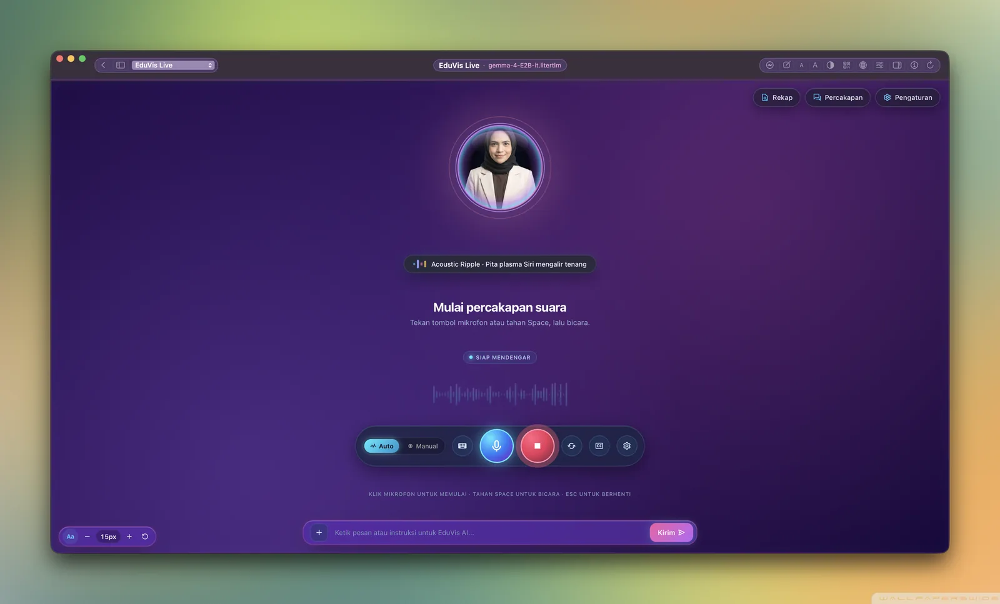
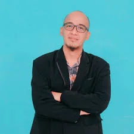

1. Tantangan
Penggunaan AI cloud memerlukan biaya API berulang, internet stabil, dan menimbulkan risiko privasi saat menganalisis dokumen sensitif atau bahan ajar internal.
Dirancang dan dibangun oleh Subuh Kurniawan — menggabungkan 15 ruang kerja AI interaktif, percakapan suara dua arah EduVis Live & Futuristik dengan TTS Neural lokal, akses LAN HTTPS + QR, serta aplikasi EduVis Native AI 100% SwiftUI Liquid Glass tanpa biaya API dan tanpa cloud.
Saksikan langsung alur kerja Space Lens Launcher, visualisasi Mermaid/KaTeX, percakapan suara EduVis Live, TTS offline, dan aplikasi macOS Native AI.
Bagaimana EduVis AI Gallery menyatukan inferensi LLM lokal, suara neural, dan UX kelas native dalam satu suite terpadu.
Penggunaan AI cloud memerlukan biaya API berulang, internet stabil, dan menimbulkan risiko privasi saat menganalisis dokumen sensitif atau bahan ajar internal.
Menggabungkan Dual Engine (MediaPipe WebGPU/OPFS + LiteRT-LM Metal GPU), TTS lokal on-demand dengan auto-cleanup memori, serta jembatan macOS SwiftUI & LAN HTTPS.
15 ruang kerja AI berjalan mulus secara lokal — bisa dibuka dari macOS native, browser, hingga iPhone/iPad di Wi-Fi lokal dengan latensi rendah dan kedaulatan data penuh.
Menghadirkan pilihan antarmuka 100% SwiftUI Liquid Glass (Spotlight Quick Ask ⌘K, pemantau Unified Memory real-time, dikte SFSpeechRecognizer)
sekaligus launcher Space Lens WebKit dengan Pusat Model seret-dan-lepas untuk berkas .litertlm.
Berjalan langsung di Chrome/Edge tanpa server backend. Model terkuantisasi disimpan otomatis ke Origin Private File System (OPFS) untuk pemuatan instan berikutnya.
Server TTS lokal (tts_server.py) aktif otomatis hanya saat dibutuhkan dan membebaskan RAM saat idle — mendukung VITS Indonesia (Wibowo, Ardi, Gadis, Juminten, Asep), Piper News TTS, dan RVC.
Satu Mac bertindak sebagai host lokal di https://IP-MAC:1234 dengan API OpenAI-compatible (/v1). Perangkat lain cukup memindai QR Code untuk menikmati Chat, KaTeX, Mermaid, hingga EduVis Live langsung dari ponsel atau tablet.
| Varian Model Gemma 4 | Parameter Aktif | RAM / VRAM Minimum | Rekomendasi Penggunaan |
|---|---|---|---|
| Gemma 4 E2B-it | ~1.6B | 8 GB RAM (2 GB VRAM) | Sangat cepat & ringan; ideal untuk MacBook Air 8 GB, EduVis Live, dan chat harian. |
| Gemma 4 E4B-it | ~2.7B | 8–16 GB RAM | Keseimbangan optimal antara kecepatan streaming dan pemahaman konteks/dokumen. |
| Gemma 4 12B-it | 12B | 16 GB+ RAM (6–8 GB VRAM) | Penalaran menengah mendalam, audit kode, dan analisis RAG multi-dokumen. |
| Gemma 4 26B-A4B / 31B-it | 26B–31B | 32 GB+ Unified / VRAM | Instruksi kompleks kelas workstation (Apple Silicon Pro/Max/Ultra atau RTX). |
Ditenagai live-conversation.js, streaming LiteRT-LM GPU, visualizer Siri Live Sphere, dan pemisahan prosa TTS dari elemen visual.
Web Speech / native SFSpeechRecognizer dengan Auto Silence VAD atau Push-to-Talk.
Peran bawaan konsultan EduVis; perintah ganti peran otomatis beralih ke mode Kustom.
Respons di-stream real-time melalui /v1/chat/completions dengan akselerasi GPU.
KaTeX, Chart.js, Mermaid, dan blok kode dirender di layar tanpa dibacakan TTS.
Suara lokal Wibowo + fallback Realtime Native, Siri Live Sphere, & potong bicara.

gemini_live.html)Antarmuka percakapan suara lengkap dengan panel pengaturan mendalam dan penyimpanan preferensi permanen di localStorage.
execFemale, execMale, ilustrasi Arsi & Narendra).
gemini_live_futuristik.html)Tampilan layar lebar sinematik bergaya HUD untuk percakapan hands-free yang fokus pada sphere dan transkrip langsung.
Screen Wake Lock, tombol Perangkat lain (QR), dan buka di browser.Klik gambar mana saja untuk memperbesar dalam lightbox interaktif.
Repo GitHub dibuat ringan (<50 MB tanpa Git LFS). Pilih tab di bawah sesuai kebutuhan Anda.
git clone https://github.com/subuh-kurniawan/EduVis-AI-Galery.git cd EduVis-AI-Galery # Unduh model publik (embedding & TTS Indonesia) python3 scripts/download_models.py # Opsional: ikut unduh aset GitHub Releases & Piper News TTS python3 scripts/download_models.py --all
# Jalankan langsung & pasang ke ~/Applications/ python3 gemma_chat_gui.py # Atau build bundle mandiri EduVis AI Gallery.app saja python3 scripts/build_dmg.py --app-only
cd EduVisNativeApp chmod +x build_native_app.sh ./build_native_app.sh open "EduVisNativeApp/EduVis Native AI.app"
# Build penuh kedua .app + installer DMG python3 scripts/build_dmg.py # Atau kemas ulang DMG tanpa kompilasi ulang python3 scripts/build_dmg.py --dmg-only
Membangun pengalaman AI lokal yang praktis untuk pembelajaran, kerja, dan eksplorasi model dengan kedaulatan data penuh.

Berfokus pada pengembangan aplikasi Local-First AI — memadukan kecepatan antarmuka native macOS (SwiftUI & AppKit), ekosistem Edge AI (Gemma 4, LiteRT-LM, WebGPU/WASM, Chrome Built-in AI), serta sintesis suara neural lokal agar siapa pun dapat memanfaatkan AI secara privat tanpa ketergantungan cloud.
Suite AI lokal berbasis Gemma 4 & LiteRT-LM: 15 ruang kerja web, 13 studio macOS SwiftUI Liquid Glass, EduVis Live Voice + Siri Live Sphere, TTS Neural offline, dan server LAN HTTPS.
Kumpulan aplikasi AI lokal yang memanfaatkan Chrome Built-in AI (Gemini Nano) langsung di browser, lengkap dengan panduan persyaratan browser, arsitektur teknologi, dan akses QR LAN.
Penghargaan untuk proyek open-source yang menopang TTS lokal, inferensi on-device, dan ekosistem suara pada EduVis AI Gallery.
.litertlm dan MediaPipe Web LLM API.